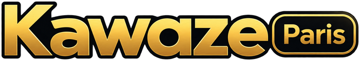

OuvertParie sur les matchs des Worlds.
- Les matchs arrivent tout seuls, avec les cotes en direct.
- Paris ouverts jusqu'à 5 min après le début, cash out jusqu'à 10 min.
- Classement de la commu.
Les jeux de la commu de Kawaze. Connecte-toi une fois avec Twitch : tes centimes sont les mêmes sur Kawaze Paris et au Kawazino.

OuvertParie sur les matchs des Worlds.
Roulette, crash et course d'animaux, en direct.
Le quiz en live.
Les centimes sont gratuits : 1 000 pour commencer, 100 de plus chaque jour, et des recharges avec les points de chaîne Twitch. Ils ne s'achètent pas et ne valent pas d'argent, c'est pour le fun et le classement.